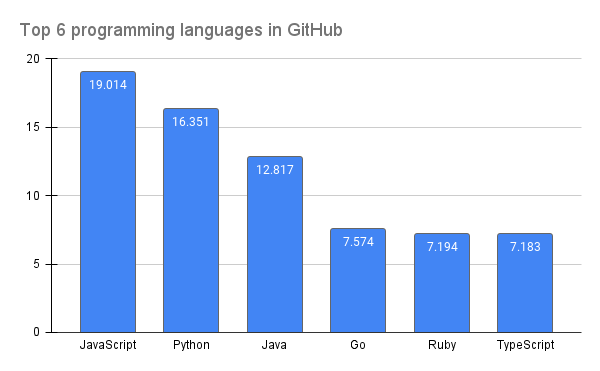

Introduction
GitHub is the largest code host in the world, with 3.4 million users. It's the place where the open-source development community offers access to most of its projects. By analyzing how languages are used in GitHub it is possible to understand the popularity of programming languages among developers and also to discover the unique characteristics of each language.
Stats in table
| Programming Language | Percentage | |
|---|---|---|
| 1 | JavaScript | 19.014% |
| 2 | Python | 16.351% |
| 3 | Java | 12.817% |
| 4 | Go | 7.574% |
| 5 | Ruby | 7.194% |
| 6 | TypeScript | 7.183% |
A data visualization based on the table
Unit for number is percentage.
Conclusion
JavaScript to be the most popular programming language on GitHub, while Python is the second most popular, followed by Java, Go, Ruby and TypeScript